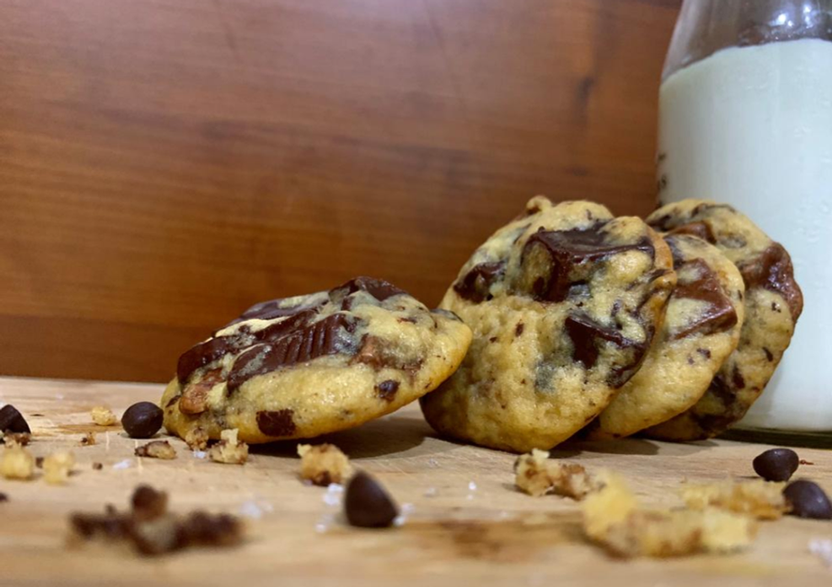

Updated : June 9 , 2022
Chocolate chip cookies are probably the greatest thing ever invented. They are crispy on the outside, soft on the inside, have the perfect amount of chewiness and are filled with chocolate! Everyone’s idea of a perfect chocolate chip cookie differs, so I have listed down a couple of tips to help you find your version of a perfect chocolate chip cookie.
I have a really deep connection with chocolate chip cookies because my nickname is “cookie” and therefore I feel the need to justify my name. I’ve also made A LOT of cookies to raise money for a bake sale donation drive and my friends and I raised over Rs. 75 000 which was pretty great.
I’ve been using this recipe for the longest time and the best part about it is that I only need a bowl and a spatula to make it so... No extra dishes for me to clean! Also, this recipe can be tweaked very easily so you can adjust it according to your taste.
Yields: 15 cookies | Prep time: 10 mins | Cook time: 12 mins | Total time: 2 hrs , 22 mins
Ingredients:
1) 1/2 cup butter, melted (100 g) *
2) 3/4 cup brown sugar
3) 1) 1/4 cup castor sugars
4) 1 tsp salt
5) 1 egg
6) 1 tsp vanilla essence
7) 1 1/4 cup all purpose flour
8) 1/2 tsp baking soda
9) 200 g bittersweet chocolate (70%), chopped **
10) Flaky sea salt (optional)
Instructions :
1) Chop your chocolate bar to small rectangular pieces (you can also use chocolate chips if you want
but hand-chopped chocolate creates texture, contrast and has a more intense flavour so don't be
lazy -_-)
2) Mix both the sugars and salt into the melted butter
3) Add in the egg and vanilla essence
4) Fold in the flour and baking soda until its almost combined
5) Fold your chocolate into the dough (don't overmix it)
6) Cover it in plastic wrap and chill for at least 2 hours ***
7) Preheat your oven to 180°C
8) Line your baking tray with parchment paper
9) Shape them into small balls (I make slightly smaller cookies so each dough ball weighs about 40 g)
10) Bake them for 12 mins **** (don't be afraid to use some flaky sea salt on top of them)
11) Allow them to cool under a fan before taking them out of the baking tray or else they'll fall apart :'(
*you could use unsalted butter if you like but it's really expensive where I live and salted butter really isn't that bad for cookies especially
**I know that this is a lot of chocolate and if you're not a chocolate person (ew) then you can use less chocolate, it really doesn't affect the consistency of your cookie
ALSO, sometimes I like using a mixture of milk and dark chocolate so you can add whatever type of chocolate you like
***I usually rest my dough overnight to bring out its flavour and trust me, it's worth it. I once rested my dough for 5 days and it tasted so good. I cannot emphasize more on the importance of resting the dough but you can also freeze it for upto a month
****If you want crispier cookie, you can bake it for 15 mins and for a softer cookie, you can bake it for 10 mins but 12 mins does a pretty good job
